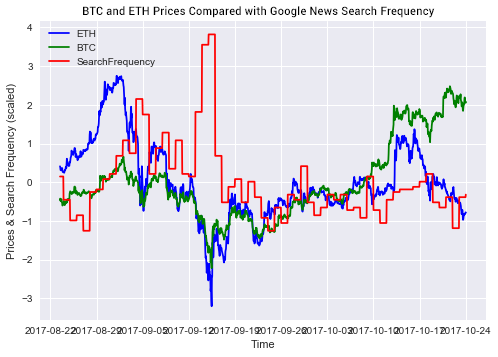
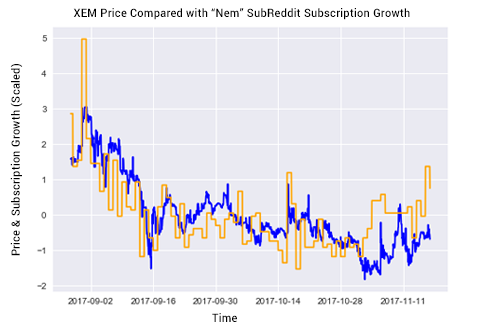
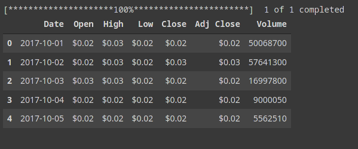
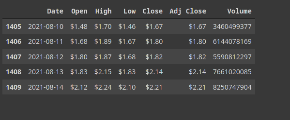
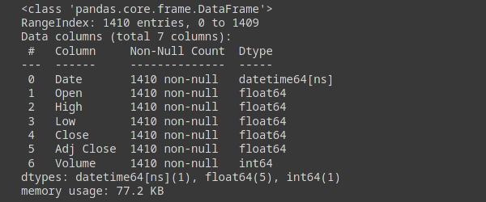
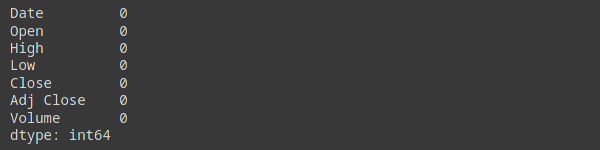
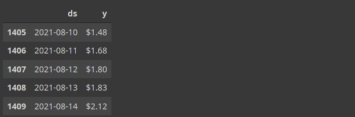
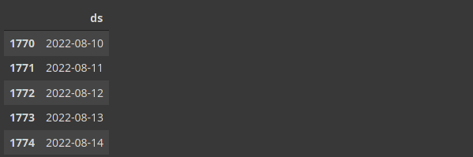
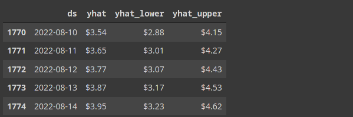

Вовед:

Криптовалутите се платежните средства од иднината. Уште од првите “скокови” на цената на Bitcoin пред неколку години почнува “хајпот” околу пазарот на криптовалутите. Има навистина многу валути, некои веќе стандардни и познати, со стандардно развивање позади нив, стабилен екосистем поврзан со истите, редовни апдејти, новости, продукти поврзани со токенот и сл. Има и сè повеќе т.н. “altcoins”, кои ги претставуваат сите валути кои не се Bitcoin, но под тој назив најмногу се подразбираат оние помалите, кои се со понестабилен екосистем и со тоа и варијацијата во нивната вредност е дефинитивно поголема. Со сè поголемиот број и на луѓе вклучени во желбата за заработка, бидејќи дознале таа можност од некој Facebook што го имаат во пријатели, сврзале разговор со некој присутен на некоја слава или виделе “meme” за валутата Dogecoin која сама по себе е создадена по популарно “meme” од минатото, сфатливо е што и бројот на измами во ова поле е доста зголемен. Сметаме дека нивната појава е корисна, дека моментално е само предвесник на нивото со кое ќе бидат присутни во иднината, како и дека сами по себе носат многу новости, не само во “изгледот” на парите од иднината, туку и во начинот на кој процесите и операциите ќе се одвиваат во секојдневниот живот околу нас. Доста впечатлив ни беше и самиот факт дека има криптовалута чија вредност и влијание се одржува преку популарните “meme”-иња, додека останатиот дел од нејзиниот екосистем е доста послабо развиен. Но, самата нејзина појава, како и тоа дека опстанува во конкуренција со другите, дефинитивно поттикнува и најобичните корисници на интернет, а знаеме колку е ниско поставен стандардот за обичен корисник на интернет, да се свесни за тоа со какви “глупости” од секојдневниот живот можат да влијаат на работи од значење. Како највпечатлив пример за тоа би ги земале неколкуте денови од тргувањето со акции на неколку компании кои се во пропаѓање на берзата во САД кое се случуваше на крајот на март оваа година. Во случајов е различна тема, но базата на корисници беше истата, најобични луѓе поттикнати од дискусии на одредена тема на Reddit. На некој начин ни се допаѓа таа децентрализација која ја носи темава како новост, бидејќи малку хаос и непредвидливост, преку присуството на повеќе “гласови” што влијаат, не штетат на систем контролиран од малку.
Повеќе за валутите:
Зачетоците на крипто светот датираат од 2009 година, преку Bitcoin-от како валута. Основниот принцип е децентрализација, односно еден широко распространет систем, во кој што јазлите на кој што истиот функционира се самите корисници кои помагаат да се извршува целиот код на блоковскиот систем, еден блок претставувајќи колекција на извршени трансакции. Сите единки закачени на тој систем кој помагаат да се изврши, имаат увид во блоковите кои се полнат со нови трансакции како што истите се извршуваат, па нема начин за измама во рамки на самиот систем.Медијатор, односно трето лице, кое е исто така дел од тој систем, ја има улогата на страна која гарантира за истата со мала заработка за возврат. Така се губи потребата од банките, односно моќта која ја имаат истите. Не можат да диктираат кога може да се извршуваат трансакции, да одлучуваат дали да ги дозволуват или не, како и најважното, да ги определуваат вредностите на валутите вклучени во трансакциите кои се извршуваат. Распространетоста гарантира дека во секое време ќе има некој посредник што во најбрз можен рок ќе потврди и ќе овозможи да помине одредена трансакција. На крај сите три страни ќе ја имаат постигнато целта. Во самите банки и единки вклучени околу нив лежат следните предизвици околу тоа во која насока ќе се одвива дигитализацијата на валутите. Ќе се прифатат масовно, тоа е факт. Некои големи компании веќе си “играат” со идејата за дозволување на уплата со нив, додека други градат стратегија за начинот на кој што ќе влезат на тој пазар. Тоа е и реалниот временски тек до кој е стигнат крипто светот, односно околу 5-10 години според некои многу груби предвидувања оддалечен од општото прифаќање во некоја негова форма. Сепак, сметаме дека тоа е и доста огромен напредок во однос на зачетоците на крипто светот кога бил креиран како концепт од страна на Satoshi Nakamoto, псевдоним за личност или личности чив вистински идентитет сè уште не е откриен и се позади “whitepaper”-от за Bitcoin претставен во 2008 година преку кој се опишани техничките спецификации и мотивациите позади ваквата, во тоа време, иновација.
Фактори врз вредноста:
Bitcoin. Технологијата која стои позади криптовалутите е за прв пат имплементирана кај Bitcoin-от. Како што Bitcoin добива или губи на вредност, така и активностите околу помалите валути(altcoin-ите) се под истото влијание. Доколку расте, растат и останатите кои се настанати под негово влијание. Доколку паѓа, во падот го следат и останатите. На графикот е претставено споредбено и скалирано промените во вредноста на Bitcoin-от(со зелено), наспроти таа на Ethereum-от(со сино), на ист временски интервал:

Тековни настани. Сосема сфатливо е дека некој тековен настан апсолутно влијае врз вредноста на криптовалутите. Доколку се појави некој правен случај против одредена валута, нормално е вредноста на истата да паѓа. Доколку Elon Musk излезе на твитер и излезе дека ќе дозволи во неговата компанија да се плаќа со виртуелна валута, нормално е вредноста на истата да се зголемува. Сосема често користен трик на модерните “инфлуенсери” во денешно време се споменатите форми на “pump and dump”-ови. Таа шема се состои од вештачко наведување кон раст или пад на вредноста преку креирање позитивна или негативна слика со цел носење на спомената вредност во насока на која што на нив им одговара. Шема што теоретски е нелегална, но со сè поголемите можности да се изведе е сè потешко да се докаже како таква. На графикот е прикажано движењето на вредноста на двете валути(со сино и зелено), во случајов пад, наспроти зголемувањето на Google пребарувањата на тема криптовалути(со црвено):

Во конкретниот извадок од временската серија на податоци евидентна е поврзаноста помеѓу секој пад и зголемувањето на интересот за пребарување на таа тема(негативни вести или настани случени кои донесуваат до акции како “панично продавање”).
Перцепцијата во јавноста. Навидум сличен фактор како претходниот, но сепак со доста разлики. Колку поголем е бројот на луѓе кои делува како да се разбираат од истите, толку е и поголема шансата некој друг да се убеди во вмешување во тргување со истите. Така и обратното, доколку е мала групата, односно заедницата, која е вмешана во истото, толку помала ќе е и довербата која што ќе ја имаат луѓето однадвор за самиот продукт кој го претставува заедницата. На графикот е прикажана скалирано промената во бројност на популарен subreddit на тема криптовалути и корелацијата која ја има со самата вредност на истите:

Градење на моделот:
Предвидувањето на вредноста на валутите е тешко, посебно со оглед на тоа колку тој пазар е сè уште склон на нагли промени, а и фактот дека е во порана фаза од својот развој и има уште делови од својот екосистем кои треба да ги додефинира пред да би се прифатил во некоја поопширна употреба. На некој начин е како интернетот во 80тите години. Тогаш се појавил како платформа со отворена технологија која ги збунувала луѓето и користа која тие би ја имале од истата, сè додека не се појавиле фирмите како Amazon, Google и Facebook со јасна идеја за иновации во склоп на таа платформа. Клучниот збор е “Permisionless inovation”, што значи дека секој може да внесе некоја иновација без да бара дозвола од некој друг. Па, баш поради сè ова и не може толку лесно да земе било кој да предвиди како ќе се движи самиот пазар на валутите, а со тоа и сонот на сите, лесно да заработи од истото.
За градење на моделот ќе користиме библиотека наречена Prophet, развивана од Facebook, која е популарна конкретно за модели за предвидување на временски податоци. Базирана е со Additive model на регресија и се користи за креирање на точни и разумни предвидувања.
Вчитување на библиотеки¶
Како и секогаш, ќе почнеме со вчитување на библиотеките кои ќе ни бидат потребни за градење на моделот:
from datetime import datetime, timedelta
from fbprophet import Prophet
from fbprophet.plot import plot_components_plotly, plot_plotly
import pandas as pd
import plotly.graph_objects as go
import warnings
import yfinance as yf
warnings.filterwarnings('ignore')
pd.options.display.float_format = '${:,.2f}'.format
Преземање на податоци¶
За преземање на податоците ќе ја користиме yfinance библиотеката, со чива помош се пристапува до податоците на Yahoo! Finance. За пример валута ја земавме Cardano, софтвер кој употребува доста нова технологија и иновации и податоците за вредноста на истиот како валута се од 01 октомври 2017 година:
today = datetime.today().strftime('%Y-%m-%d')
start_date = '2017-10-01'
ada_df = yf.download('ADA-USD',start_date, today)
ada_df.reset_index(inplace=True)
ada_df.head()

ada_df.tail()

Лесно забележлива е промената на вредноста во периодот од една година кој е изминат.
Проверка на податоци¶
ada_df.info()

ada_df.isnull().sum()

Поради изворот од кој ги преземавме и типот на податоци кои ги нуди, забележавме дека податоците се доста “чисти” и нема потреба да се извршуваат некакви операции врз нив како би се користеле, што би ја смениле нивната вредност.
Креирање на модел¶
Две колони се потребни како влез во моделот, датумот и бројката која ќе ја земеме како вредност за тој ден(се одлучивме за вредноста од колоната Open).
df = ada_df[["Date", "Open"]]
new_names = {
"Date": "ds",
"Open": "y",
}
df.rename(columns=new_names, inplace=True)
df.tail()

За подобра визуелна репрезентација, вчитаните податоци ги прикажуваме со помош на библиотеката Plotly:
x = df["ds"]
y = df["y"]
fig = go.Figure()
fig.add_trace(go.Scatter(x=x, y=y))
fig.update_layout(
title_text="Time series plot of Cardano ($ADA) Open Price",
)
fig.update_layout(
xaxis=dict(
rangeselector=dict(
buttons=list(
[
dict(count=1, label="1m", step="month", stepmode="backward"),
dict(count=6, label="6m", step="month", stepmode="backward"),
dict(count=1, label="YTD", step="year", stepmode="todate"),
dict(count=1, label="1y", step="year", stepmode="backward"),
dict(step="all"),
]
)
),
rangeslider=dict(visible=True),
type="date",
)
)
EMBED¶
Креирање на моделот, предавање на влезните податоци, како и задавање на колку денови од иднината сакаме да се додадат во моделот како предвидена вредност:
m = Prophet(
seasonality_mode="multiplicative"
)
m.fit(df)
future = m.make_future_dataframe(periods = 365)
Приказ на последните денови кои ќе бидат предвидени:
future.tail()

Предвидување на резултати¶
Приказ на две предвидувања на резултати:
следниот ден(утре) од денес:
next_day = (datetime.today() + timedelta(days=1)).strftime('%Y-%m-%d')
forecast[forecast['ds'] == next_day]['yhat'].item()
1.8646246112439222
сите зададени вредности во денови при креирање на модел:
forecast = m.predict(future)
forecast[['ds', 'yhat', 'yhat_lower', 'yhat_upper']].tail()

Забележуваме дека моделот предвидува зголемување на вредноста за речиси двојно во периодот за една година од денес.
Исцртување на резултати¶
Приказ на иманите резултати досега, заедно со додадените предвидувања за периодот од една година од денес:
plot_plotly(m, forecast)
Embed¶
Компоненти на предвидување¶
Моделот на предвидување вклучува неколку компоненти кои во продолжение ги визуелизираме:
plot_components_plotly(m, forecast)
Embed¶
Компонентите кои ги опфаќа предвидувањето вклучуваат:
анализа на растот на кривата - моделот покажува дека вредноста на криптовалутата Cardano во период од една година сметано од денес ќе има нагорен тренд.
сезонска анализа на ниво на месец - моделот покажува тeнденција дека вредноста на валутата е највисока во пролетните месеци, додека најниска во есенските.
сезонска анализа на ниво на ден - моделот покажува тенденција дека вредноста на валутата е највисока во петок, додека најниска е во вторник.
Заклучок:
Моделот засега е основен и е склон кон грешки при појава на некои непредвидливи тековни работи кои би влијаеле кон некоја нагла промена на вредностите на валутите. Сепак, работи кои може да се извлечат од него како нагорниот тренд кој е предвидено да го има самата нивна вредност се очигледни. Исто така, компонентите се доста јасни дека доколку сакаме да добиеме најмногу криптовалути за дадените пари, треба во нив да вложиме во некој убав есенски вторник, додека вистинско време за евентуално нивно продавање би бил некој исто така убав пролетен петок. Во секој случај, ова поле е “here to stay” и иновациите кои истото ќе ги донесе и текот по кој целиот тој екосистем ќе се развива останува да ги видиме.